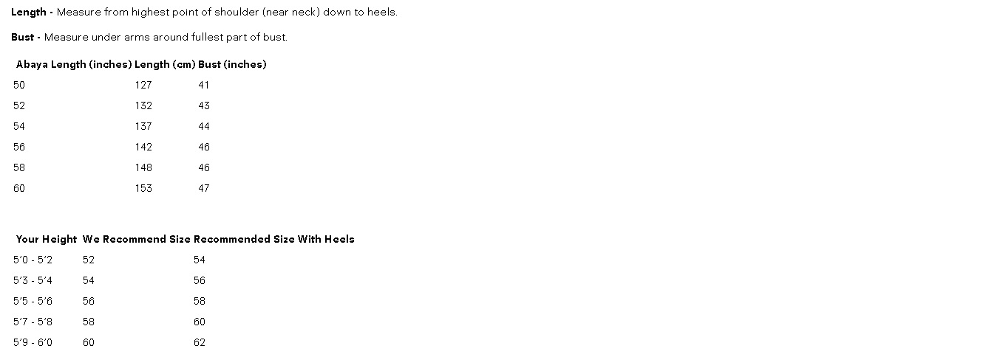

What is my Abaya size ?
All Abaya by standard are made to be loose fitting, sizes are more related to height, for example, a size 58 means it has a length of 58 inches. If you will be wearing heels we recommend buying one size above your height. For example if you are 5ft 4inch we recommend you buy a size 56. Please see the size charts below. If you need any further assistance please contact us at info@HouseOfHijab.com . Length - Measure from highest point of shoulder (near neck) down to heels. Bust - Measure under arms around fullest part of bust.